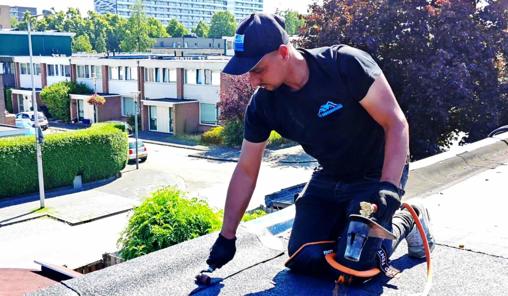
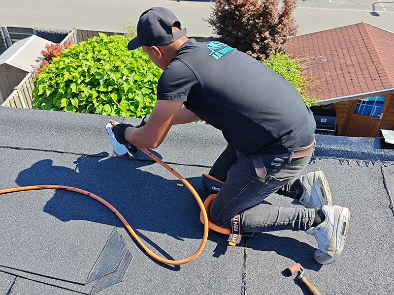
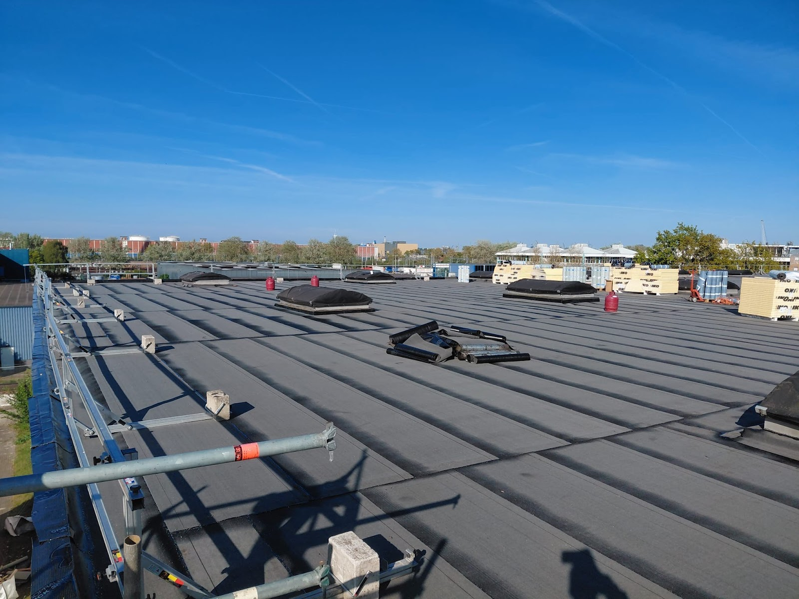
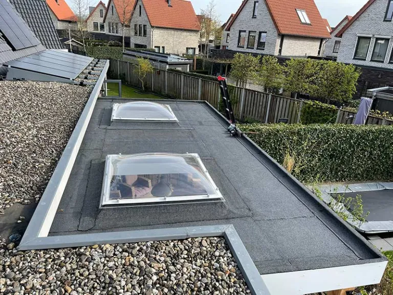
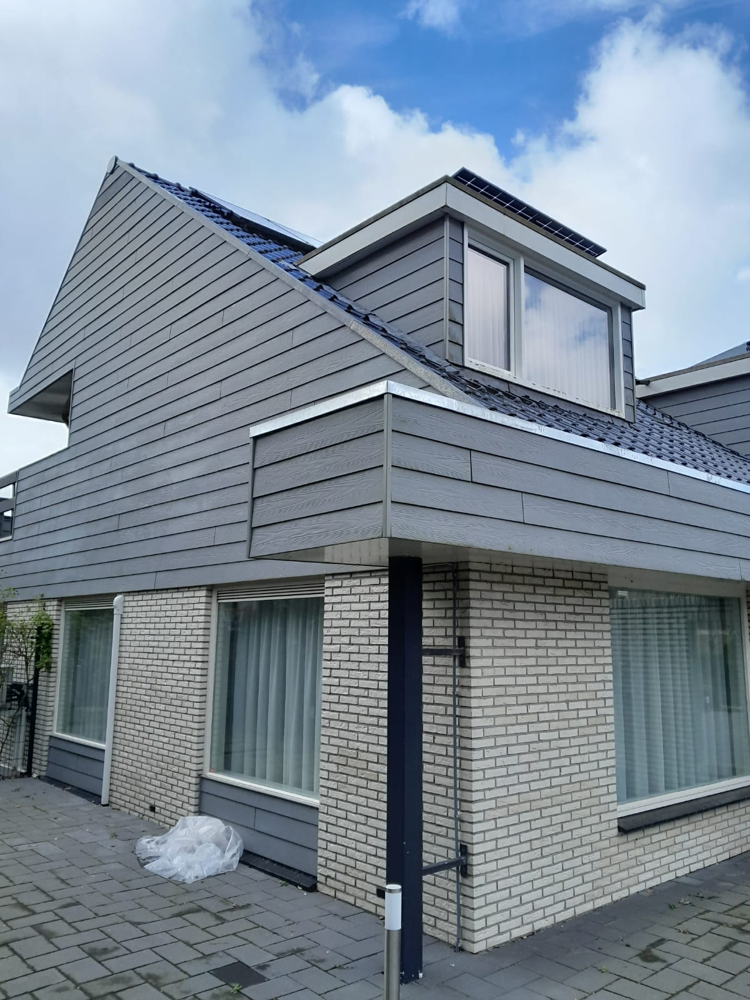
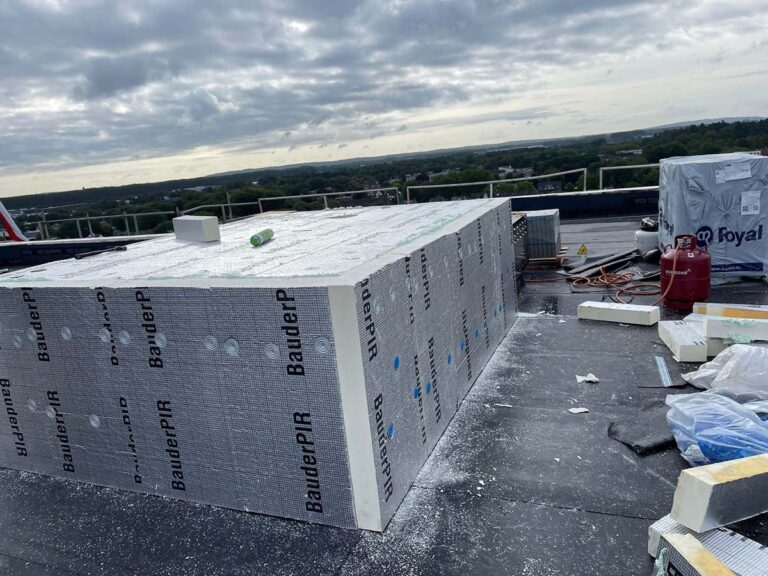
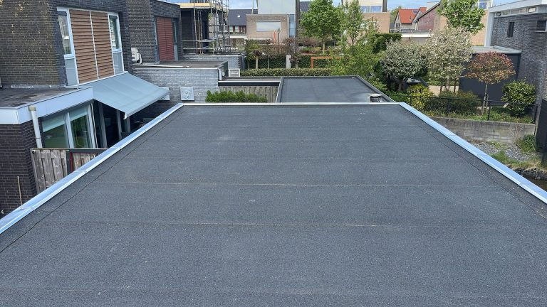
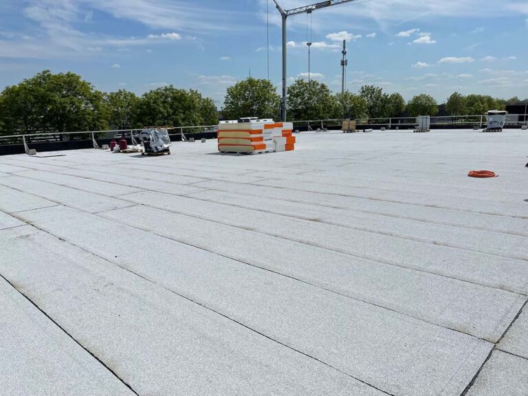
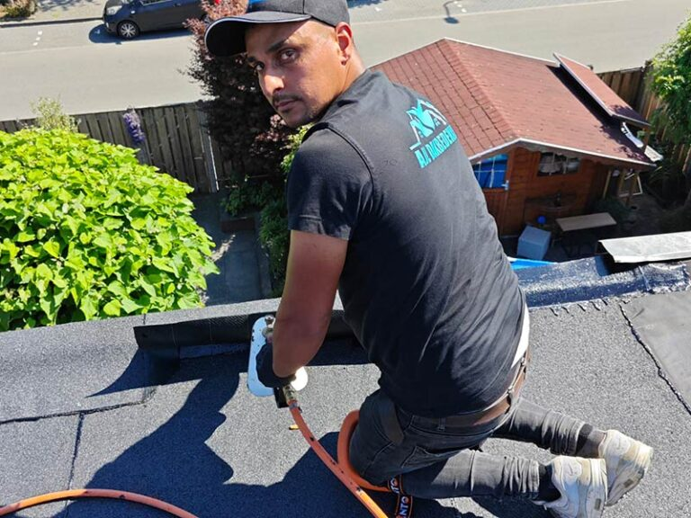

Dakdekker in Ede
Een dak dat er weer jaren tegen kan.
Lekkage, stormschade of een plat dak dat op is? Wij repareren, vernieuwen en isoleren uw dak. Eerst een gratis inspectie, dan een eerlijke prijs.
4,8 uit 58 Google-reviews

Lekt het nu?
Bij acute lekkage of stormschade zijn wij dag en nacht bereikbaar. Wij maken het dak eerst waterdicht, zodat de schade niet erger wordt.
Van één losse dakpan tot een heel nieuw plat dak
Wij werken aan platte en hellende daken, voor particulieren en bedrijven. Staat uw klus er niet tussen? Bel gerust, wij denken mee.

Platte daken
- Bitumen dakbedekking
- Sterk en waterdicht. Bij nieuwbouw en renovatie, op woningen, uitbouwen en bedrijfspanden.
- Daklekkage opsporen
- Water komt vaak ergens anders binnen dan waar het lek zit. Wij zoeken de oorzaak en lossen het bij de bron op.
- Dakisolatie
- Met PUR, glaswol of EPS. Bespaart op stookkosten en is goed te combineren met nieuwe dakbedekking.
- Onderhoud platte daken
- Dak en afvoeren schoon, naden en dakranden gecontroleerd, kleine gebreken direct hersteld.
Elk dak
- Dakreparatie en dakrenovatie
- Scheuren, blazen en losse naden snel hersteld. Is het dak op, dan vernieuwen wij het compleet.
- Dakpannen vervangen
- Van een paar losse pannen tot een nieuw pannendak.
- Lood- en zinkwerk
- Waterdichte afwerking rond schoorstenen en dakkapellen.
- Schoorsteenrenovatie
- Van voegen herstellen en een schoorsteenkap plaatsen tot een volledige renovatie.
- Spoedservice stormschade
- Losgewaaide dakbedekking of verschoven pannen maken wij eerst waterdicht.
Strak afgewerkt, tot aan de daktrim
Een greep uit ons werk: woningen, uitbouwen, dakkapellen en grote bedrijfsdaken.






Eerst kijken, dan pas een prijs
Geen dak is hetzelfde, dus wij werken niet met vaste tarieven. De prijs hangt af van de grootte, het soort dakbedekking en de staat van uw dak. U krijgt een offerte op maat, zonder verborgen kosten.
- Dakinspectie altijd gratis
- Vrijblijvende offerte
- Heldere uitleg over het werk
-
1
U belt of stuurt een bericht
Foto's van uw dak zijn altijd welkom. Zo kunnen wij de klus meteen beter inschatten.
-
2
Wij nemen contact op
Zo snel mogelijk, telefonisch of per e-mail, zoals u dat het liefst heeft.
-
3
Gratis inspectie en offerte
Wij bekijken uw dak en sturen een heldere offerte op maat. U hoort eerlijk wat nu nodig is en wat nog kan wachten.
Wat klanten over ons zeggen
4,8
uit 58 Google-reviews
"Goed werk verricht bij vervanging dakbedekking , snel en vakkundig. Snelle communicatie. Toen bleek dat de dakplaten aangetast zijn door vocht hebben ze die dezelfde dag ook nog vernieuwd en meteen isolatie aangebracht. Ook het nawerk is goed gedaan inclusief het verwijderen van een vieze zwarte bitumenvlek op de muur!"
"Heb je een dakdekker nodig? Bel AJL! Deze toppers hebben top werk geleverd! Zowel het dak van ons huis als dat van onze schuur opnieuw gedaan. Het eindresultaat, inclusief bijpassende daktrim, spreekt voor zich!"
"Zeer tevreden over de renovatie van ons dak! De prijs-kwaliteitverhouding is goed en alles is netjes uitgevoerd. Daarnaast reageert het bedrijf snel en altijd vriendelijk op vragen en berichten. Wij zijn erg tevreden met het eindresultaat en zouden dit bedrijf zeker aanbevelen!"
"Ik heb mijn woning en Apeldoornse moskee laten doen bij AJL dakbedekking, we werken heel erg keurig en strak. Nemen de tijd om hun werk met zeer goede kwaliteit af te ronden! We zijn op afspraak en erg snel! Zeker aanrader."
"Na de eerste ervaring met AJL gelijk een nieuwe afspraak gemaakt om de tweede dakkapel ook te laten doen. Zeer blij met het resultaat. Top werk geleverd."

Dakdekkers uit Ede, voor heel Nederland
AJL Dakbedekking is een dakdekkersbedrijf uit Ede. Onze dakdekkers hebben jarenlange ervaring met platte en hellende daken. Wij werken voor particulieren en bedrijven in Ede, de rest van Gelderland en daarbuiten.
Wij gebruiken alleen hoogwaardige materialen en werken netjes en zorgvuldig. Na afloop ruimen wij alles op, zodat u alleen een goed dak overhoudt.
- Werkgebied
- Ede, Gelderland en daarbuiten
- Voor
- Particulieren en bedrijven
Laat uw dak gratis bekijken
Bellen is het snelst. Liever schrijven? Vul het formulier in, dan nemen wij zo snel mogelijk contact op.
Bel 0318 425 041- Spoed, mobiel
- 06 57630403
- info@ajl-dakbedekking.nl
- Adres
- Darwinstraat 7f, 6718 XR Ede
- Bereikbaar
- Maandag t/m zaterdag 24 uur per dag
Zondag gesloten